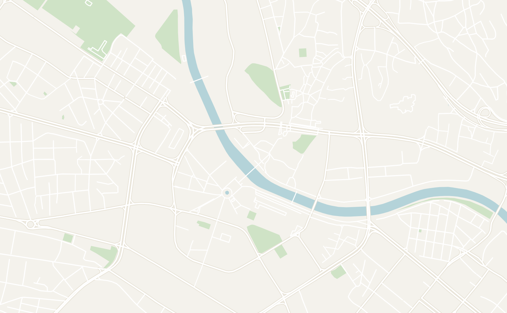
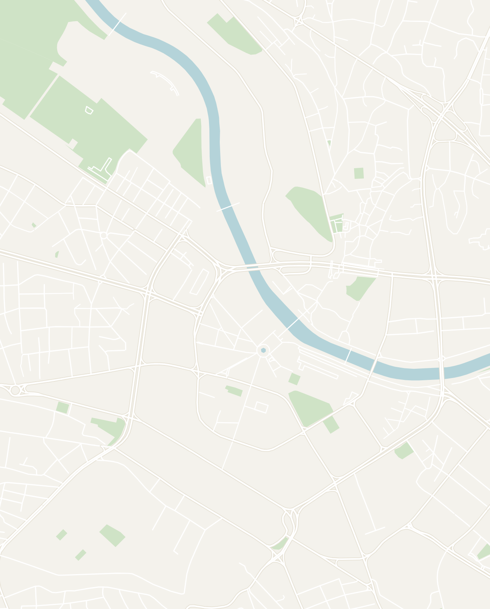
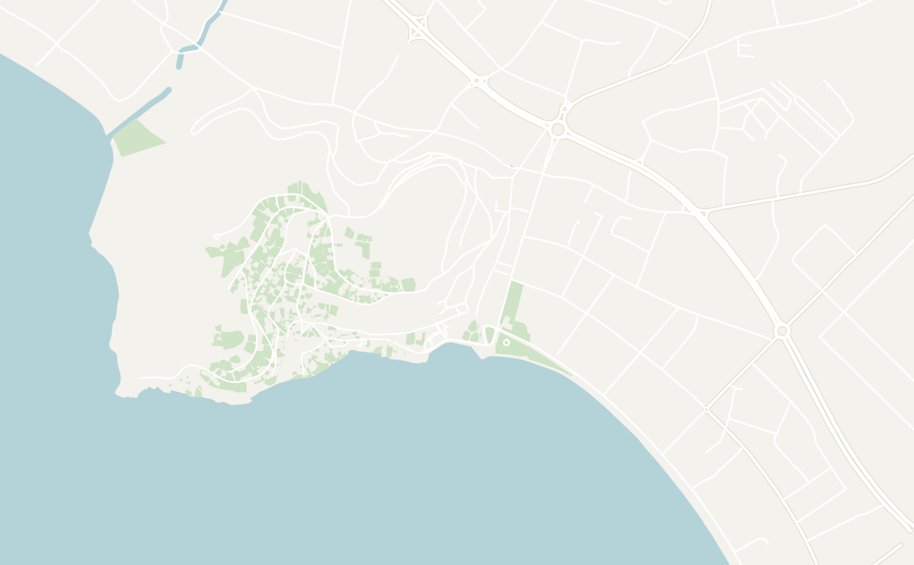
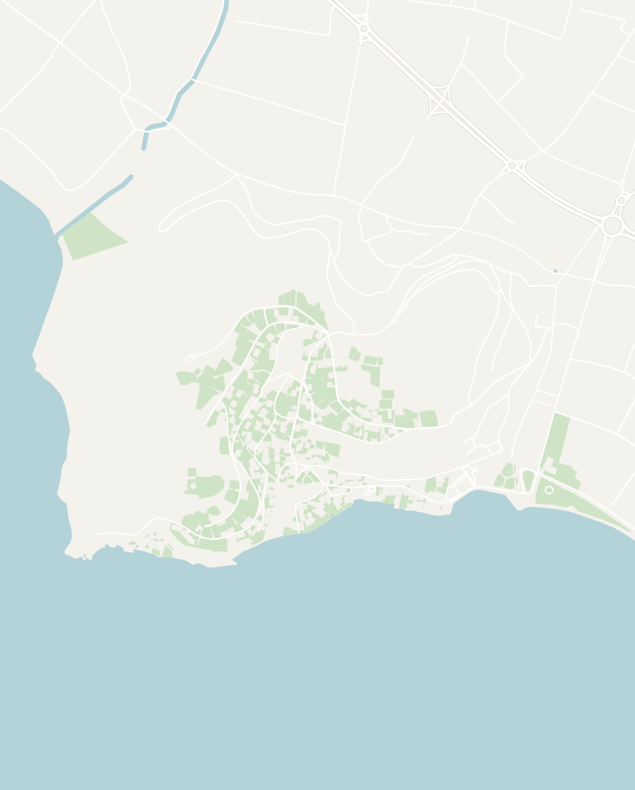

General
- I came into North Macedonia with relatively low expectations, but was very pleasantly surprised. The country has a lot of beautiful natural sights and fascinating history. It is an underrated country with very few tourists outside of some famous spots (even compared to the rest of the Balkans). You'll often have historical sites almost entirely to yourself
- It is a very small country that is very well connected by their bus system. The rides are usually less than 3 hours and there are regular connections from the major cities
- English is widely spoken, especially among younger people
- It was very affordable compared to the rest of Europe and even other Balkan countries. Meals were very cheap and nice Airbnbs/hostels run cheap
Suggested Route Overview
Foods (similar to most other Balkan countries)
- Tavče Gravče (national dish) - baked beans
- Burek - crumbly Balkan pastry stuffed with meat, cheese or spinach
- Ayran - salted milk drink like Kefir
Skopje
2 days recommended- Recommended time: 2 days
- This is the capital of North Macedonia and by far the largest city with over 500,000 residents. A lot of the city was destroyed in an earthquake in 1963 so it is mostly modern, but has a lot of interesting statues built as part of the Skopje 2014 project (more on that below). The city center is pretty small and the major tourist sites are walkable.
- Skopje 2014 / Statues All Over the City — Skopje has the most statues in the world with over 130+ statues, all built in the early 2010s. They're all around the center of town including on bridges, in doorways, and in random parks. The highlights are the giant Alexander the Great statue in the main square, abandoned pirate ships, but there are statues literally everywhere and it is bizarre…
- City Center
- Old Bazaar — a historic Bazaar with a very Ottoman feel (cobblestone streets and wooden buildings). One of the largest Bazaars in the Balkans. Lots of old shops largely run by Turkish and Albanian shopkeepers. Good place to buy souvenirs or get Kebap (Macedonian-style Ćevapi)
- Archbishop Cathedral of St. Clement of Ohrid — a block from the main square and one of the most unique churches I've ever seen. Brutalist exterior with stunning gold mosaics inside on a deep blue background. Don't miss this
- The Post Office — if you're into brutalism, this is a pretty cool visit close to the city center. It is a super dystopian building
- Kale Fortress (aka Skopje Fortress) — a large castle that overlooks the city
- Mother Teresa Memorial House — A small museum about Mother Teresa who was born in Skopje. A super quick visit since it is only a few rooms
- Free walking tour — the history here is fascinating and very unique even for the Balkans (Yugoslav breakup, the Greece naming dispute, the Albanian minority conflict, tensions with Bulgaria) and worth having a guide explain it to you. The tour I did was a 7/10, but covers a lot of ground while giving you the history
Where to Eat
- Restaurant Skopski Merak (Debar Maalo neighborhood) — a super popular with locals that serves traditional Macedonian food. It felt very upscale, but still affordable
- Kaj Гоце — tiny local spot in the Old Bazaar with a friendly owner and good Kebap
Where to Stay
- Stay anywhere near the city center or in the Bohemian Debar Maalo neighborhood. The city is very walkable

ATTRACTIONS
1The Bridge of Civilizations in Macedonia
2Stone Bridge
3Alexander the Great Statue
4Macedonia Gate
5Woman-Warrior Park
6Old Bazaar
7Archbishop Cathedral of St. Clement of Ohrid
8The Post Office
9Kale Fortress (aka Skopje Fortress)
10Mother Teresa Memorial House
RESTAURANTS & BARS
11Restaurant Skopski Merak
12Kaj Гоце

North Macedonia
Skopje
Touch to explore
Double-tap to open in Google Maps
Double-tap to open in Google Maps
Ohrid
2-3 days recommended- Recommended time: 2-3 full days to see the highlights (or longer if you want to relax)
- This is a must when in Macedonia and was one of the highlights of the whole region. However, this is by far the most popular place in North Macedonia so expect large tour groups coming for day trips from neighboring countries
- The old town sits on a hill above a stunning lake. The water is so clear you can literally see all the way to the bottom. There is lots of wildlife like birds and little fish
- Old Town — beautifully restored Ottoman-style architecture with marble streets and a really nice place to wander around. I would spend half a day to wander and check out all the sites. Everything is very close
- St. John Kaneo Church — this is the iconic church you see in most photographs of Ohrid. It is perched on a cliff over the lake and you can walk here from Old Town. The view from the surrounding area is better than the church itself
- Old Bazaar Street – main part of old town
- Samuel's Fortress – best place to get a view of the city
- Old Swimming Court – best place along the water to look at Old Town
- Labino Vista Point – a peaceful viewpoint away from the tourist crowds
- Ancient Macedonian Theatre of Lychnidos – an old theatre near the fortress
- Lake boat tour — I highly recommend doing one and you can find lots of operators along the promenade offering tours ranging from an hour to full day. The tour I went on was more expensive (link here), but covered all the sites around the lake, included a fantastic BBQ lunch and lasted a full day
- St. Naum Monastery and Springs — a monastery complex on lake Ohrid near the Albanian border. The main way to get there is by water taxi, but you can also drive there. The church itself was very busy, but make sure you go to the springs next to it. You can hire a row boat for 5 Euros. The water is insanely clear here and you can even see the plants on the bottom of the springs. This was my favorite experience in Ohrid
- The Bay of Bones Museum – I didn't go here personally, but this is also a popular stop. It is a modern recreation of a floating city. You might need to take a boat here.
Where to Stay
- Old Town Hostel Ohrid – This was my favorite hostel in Macedonia. Really good vibes and the staff is very helpful. It is also located right in the middle of Old Town


North Macedonia
Ohrid
Touch to explore
Double-tap to open in Google Maps
Double-tap to open in Google Maps
Krushevo
1-2 days recommended- Recommended time: 1-2 full days
- This is easily one of my favorite places on the whole trip. It is a tiny mountain town (4,000 people) perched in the mountains and surrounded by green hills and pine forests. I'd recommend it if you're looking for a taste of Macedonian mountain life. However, it is a bit hard to get to requiring a bus connection and a full travel day. There were also almost no tourists when I was there
- It is a very small town so the main thing to do is to wander around and explore. It is very serene and the people were extremely friendly
- Makedonium — A Soviet-era monument that looks like a spaceship/pine cone/virus sitting on a hilltop. Built to commemorate the 1903 Ilinden Uprising where locals held the Republic of Krushevo for 10 days before the Ottomans crushed it. The inside is completely white with organic-shaped relief sculptures and colored stained glass. Very interesting monument and there's almost no one there
- Mechkin Kamen — 2 hour hike from town through forest to another monument to the uprising. Easy trail and a nice way to see the landscape
- Krushevska Odaja — this is the best restaurant in town serving traditional Macedonian food
Where to Stay
- Hotel Montana Palace – If you have the budget, this is by far the best place to stay in town. There is a beautiful view of the town below from the balcony of the room and it is cheap for a 4 star hotel
Bitola
1 day- Definitely worth a 1 day stop, especially if you're crossing into Greece from here. It isn't much of a tourist city, but the downtown is gorgeous with a cobblestone walking street lined with warm yellow historic consulate buildings. Very different vibe from Skopje
- Old Bazaar — this more of an everyday working bazaar than a tourist one. Lots of Ottoman charm and big mosques with snow-capped mountains visible behind them
- Heraclea Lyncestis — Roman ruins about 30 minutes walk from downtown. Impressive mosaics, a theater, and a bathhouse. Almost no tourists
- NI Institute and Museum Bitola — has a whole wing dedicated to Atatürk, the founder of modern Türkiye who went to military school here, but not the most impressive museum that I've been to